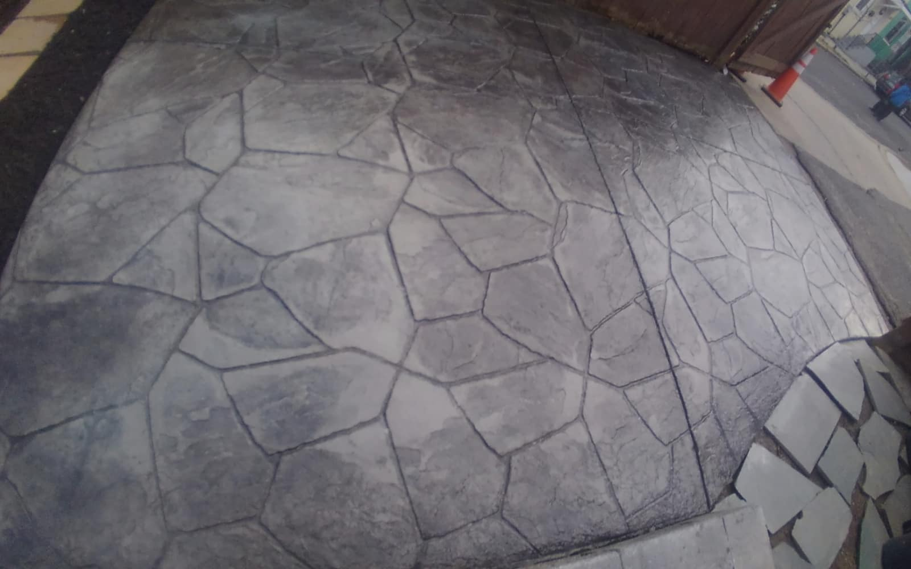
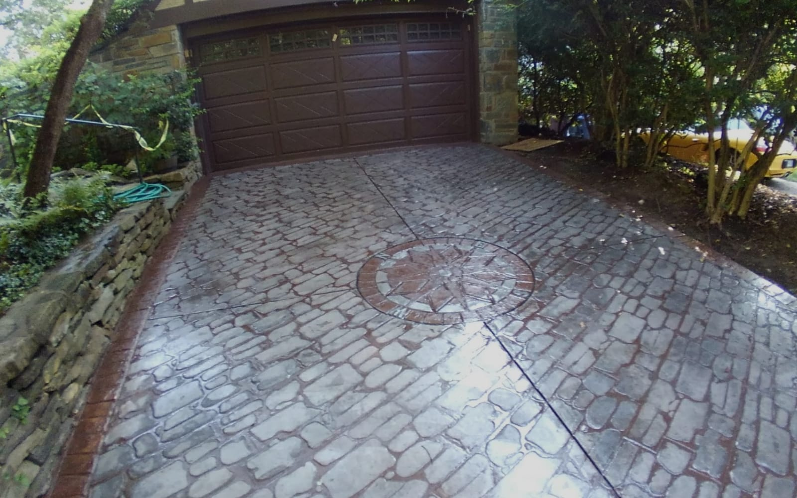
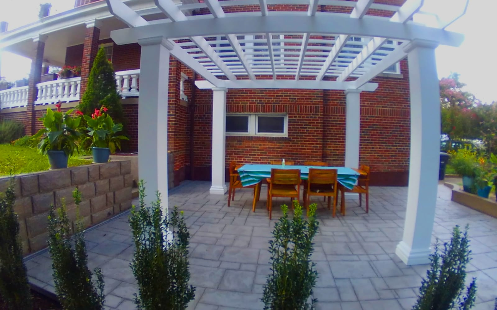
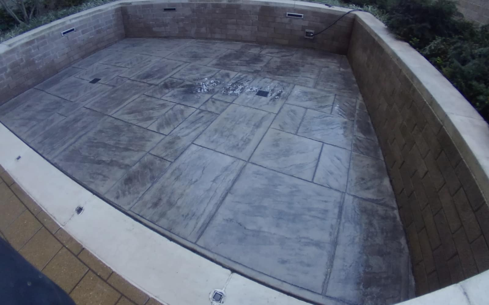
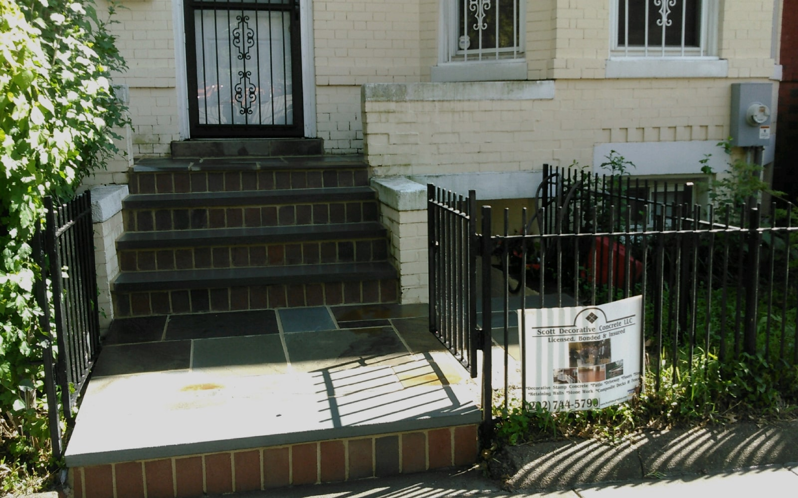
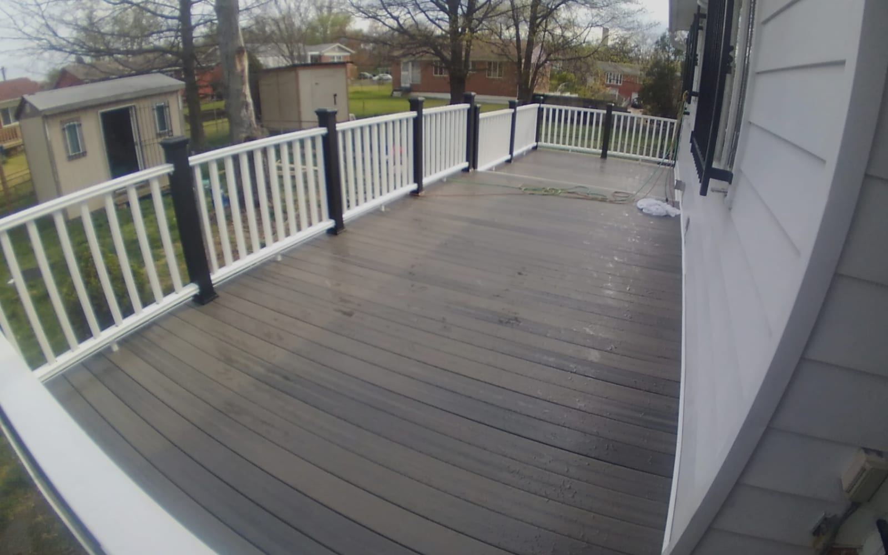
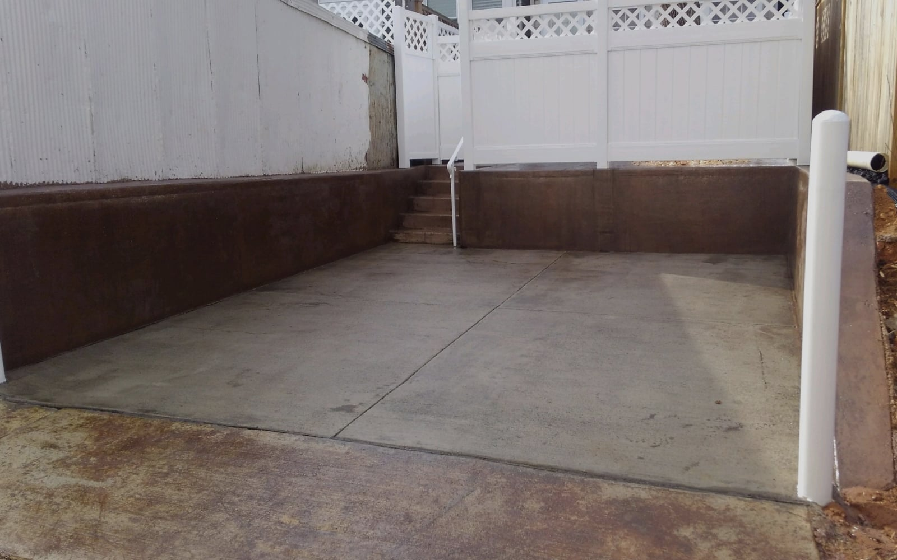

01
Stamped Concrete
Coloring and imprinting that replicates cobblestone, brick, slate, and natural flagstone — patios, driveways, walkways and pool decks.
Stamped & Decorative Concrete · Since 1983
For over 40 years, Scott Decorative Concrete has shaped driveways, patios, and walkways across Washington, DC and Maryland — stamped, stained, and finished to look like natural stone and hold up for decades.
Speak with our team (202) 301-4680
Stamped cobblestone driveway · Washington, DC
Why the details matter
Decorative concrete does what pavers and stone do — the look of cobblestone, brick, slate, or flagstone — with fewer joints to shift, weeds to pull, or pieces to settle. Done right, it's one continuous surface that stays beautiful and low-maintenance for years.
Meticulous attention to every phase — that's what four decades teaches you.
What we do
New decorative work and expert repair for homes and properties across Washington, DC and Maryland — organized around the projects our clients ask for most.

Coloring and imprinting that replicates cobblestone, brick, slate, and natural flagstone — patios, driveways, walkways and pool decks.
Rich, marbled color worked into the surface for depth that lasts — new pours or existing concrete.
Decorative and standard concrete driveways built to carry everyday load and lift your curb appeal.
Outdoor living surfaces — stamped, stained, or clean-finished — sized and shaped to your yard.
Walls that hold back grade and shape usable outdoor space — new builds and rebuilds.
Cracks, spalling, sinking, and failing surfaces assessed and restored — including retaining-wall repair.
Learn moreDeck construction to extend your outdoor space and pair with your patio and hardscape.
Fencing to finish and secure your property, coordinated with your concrete and walls.
Natural stone accents and features that complement decorative concrete and hardscape.
Tell us about your property and we'll point you in the right direction.
Request a quoteSelected projects




All photos are real Scott Decorative Concrete projects in the Washington, DC area.
Stamped & Stained Concrete
Stamping presses texture and pattern into fresh concrete, while staining works color deep into the surface — together they turn a plain slab into cobblestone, brick, slate, or flagstone. It's the beauty of pavers and stone without the shifting, settling, and weeding.
Two ways we help
New decorative concrete and hardscape, designed and poured to fit your property.
Restoration that gives failing concrete years of new life before a full replacement.
Why Scott
Four decades of decorative concrete in the DC area — the experience shows in the finish.
The credentials that protect your property and your investment on every job.
Attention to every phase, with the latest tools, training, and expertise.
Quality work and real customer service at pricing that respects your budget.
How it works
Tell us what you need and where.
We help you choose patterns and colors, then quote the work.
Our crew pours, stamps, stains, and seals with care.
You get a surface that's beautiful and built to last.
Where we work
Based in Northwest Washington, Scott Decorative Concrete serves homeowners and properties across the District and surrounding Maryland communities. Don't see your area? Reach out — we may still be able to help.
Check AvailabilityAbout Scott
Scott Decorative Concrete, LLC has specialized in stamped and decorative concrete across Washington, DC and Maryland since 1983. From cobblestone driveways and flagstone patios to retaining walls, repairs, decks, and fencing, we bring meticulous attention to every phase of the work.
As a licensed, bonded, and insured contractor based at 138 Adams St NW in Washington, our goal is simple: concrete beauty that's built to last, delivered with the tools, training, and expertise four decades have earned.
Concrete beauty, built to last
Whether it's a stamped driveway, a stained patio, a retaining wall, or a repair, contact Scott Decorative Concrete to discuss what you have in mind.
Get in touch
Tell us a little about your project and we'll follow up to talk details.